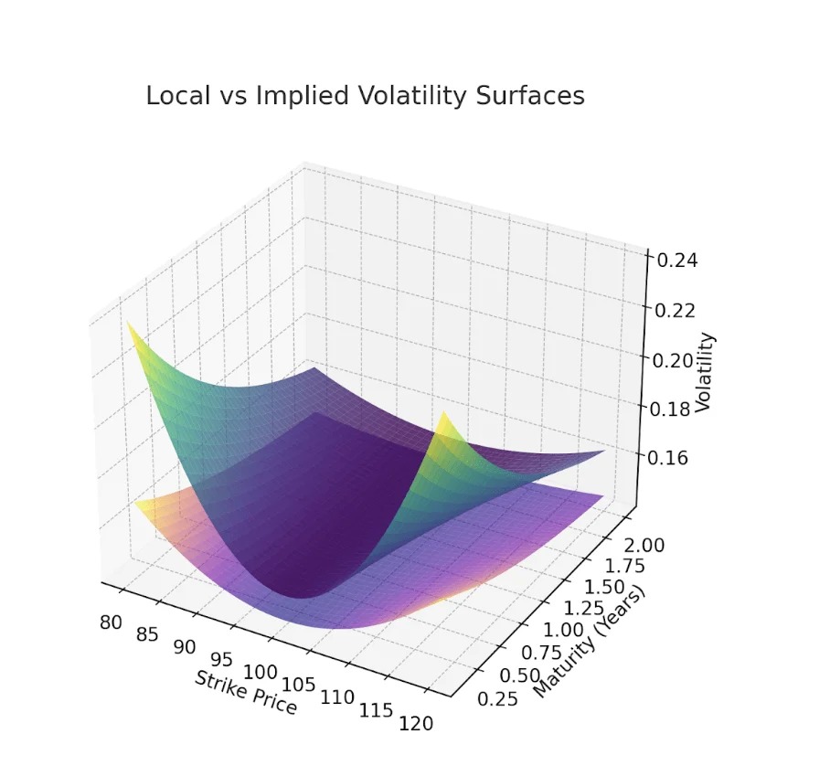
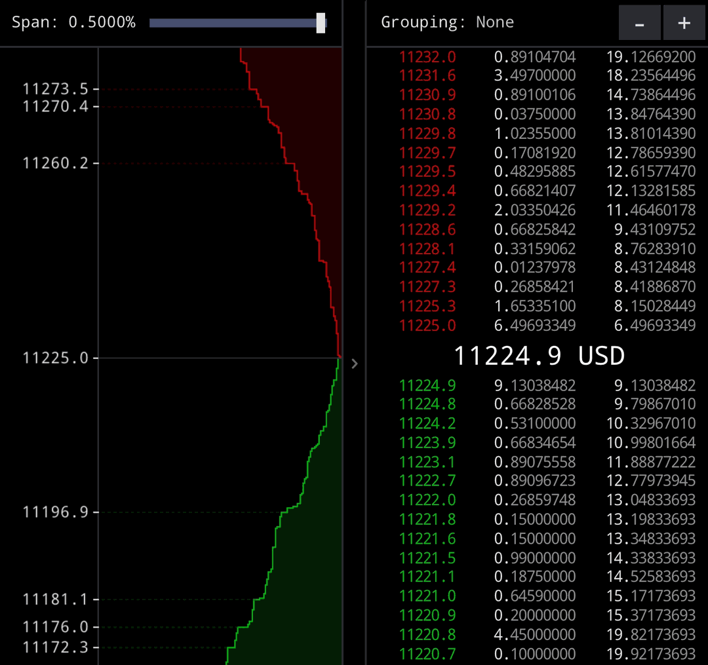
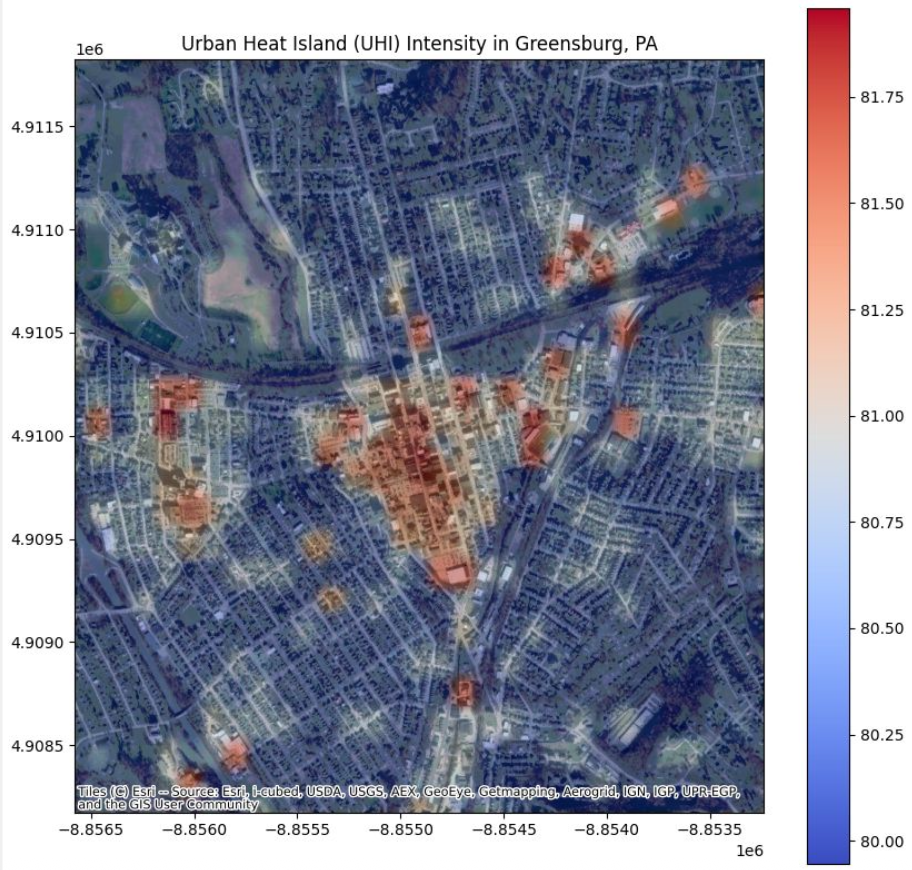

Explore My Recent

In this study, we formulate derivative model calibration as an inverse problem solved via a cooperative Multi-Agent Reinforcement Learning (MARL) framework. By modeling Monte Carlo price paths as interacting agents under a shared Actor-Critic policy network optimized through PPO, the system completely maps local volatility surfaces via simulation rather than numerical differentiation. To bypass the immense computational overhead, we implement a unique Basis Player Approximation that samples exploration noise on a tiny subset of trajectories and interpolates it across the asset paths.
The research introduces a price-space reward function to replace traditional implied volatility inversion, eliminating the numerical noise and convergence failures caused by deep Out-of-the-Money options. Calibrated against SPX call option market data with a custom vega-weighting scheme, our framework drastically outperformed standard Black-Scholes baselines. Across both anchor maturities and out-of-sample structures, the model captured the volatility smile, yielding a 53.1% to 73.6% reduction in pricing errors.
This project conducts a rigorous microstructure investigation into cross-currency basis deviations between Bitcoin traded against fiat (USD) and major stablecoins (USDT, USDC). Utilizing depth-20 Level-2 order book snapshots across multiple tier-1 exchanges, we analyze market efficiency and liquidity fragmentation during the March 2023 Silicon Valley Bank liquidity crisis. Through Binary Segmentation and regime-dependent AR(1) modeling, we isolate a severe breakdown in USDC arbitrage efficiency during its de-peg, where half-lives expanded from seconds to over two hours.
To decode these disruptions, we construct high-frequency OLS and logistic regressions to demonstrate that rolling basis volatility and order book imbalances serve as dominant forward-looking predictors of stress transitions. We further develop a custom Monte Carlo simulator driven by volume-adjusted shocks. Because volume alone could not replicate the actual de-peg, our findings mathematically isolate the collapse to structural failures in market confidence rather than trading pressure, highlighting the stabilization potential of the forthcoming GENIUS Act.

In this study, I utilize a Discrete Event Simulation (DES) to emulate the Limit-Order Book (LOB) governed by a price-time priority queues. By implementing "zero-intelligence" agents that arrive via stochastic interarrival processes, the simulation emulates the supply and demand dynamics of a singular asset. Through the strategic manipulation of interarrival rates, the platform successfully replicates diverse market trends—including bull, bear, and neutral environments—to quantitatively analyze the impact of buyer-seller discrepancies on pricing efficiency.
The research focuses on tracking critical market metrics such as bid-ask spreads, queue sizes, and order fill rates to contrast market liquidity across different economic cycles. My findings demonstrate that market efficiency is optimized when the buyer-to-seller ratio remains between 0.8 and 1.2.

Urban Heat Islands (UHIs) pose a significant challenge to major cities worldwide, with temperature disparities reaching upwards of ten degrees Celsius. These extreme heat differences contribute to severe health complications, disproportionately affecting vulnerable populations.
Jonah Zembower and I took on the task of building a regression model through a variety of open data sources such as NYC Open Data and Satellite Imagery to build a predictive Machine Learning Algorithm.
Through rigorous evaluation of various machine learning algorithms and hyperparameter optimization, we built a robust model capable of predicting urban temperatures with a 0.9606 R² score.
Discover how data science methodologies such as parameter optimization and monte carlo simulations can improve the performance of Technical Analysis (TA) techniques. Backtesting technical analysis strategies across different macroeconomic cycles while utilizing sector Exchanged Traded Funds (ETFs) produces a robust understanding of TA performance and economic cycles. It was found that TA struggled to outperform baseline buy & hold strategies in periods of strong economic growth. However it was clear that during volatile economic periods, TA outperformed buy & hold strategies, upwards of 10%.